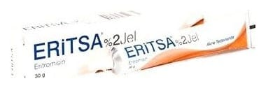

Eritsa %2 Jel ,30 g

Ne için kullanılır
KT · Bölüm 1ERİTSA topikal akne ilaçları grubuna ait tıbbi bir üründür. ERİTSA eritromisin adlı antibiyotik bir madde içermektedir. Her kutuda bir adet 30 g jel içeren alüminyum tüp bulunan formda kullanıma sunulmaktadır. Yüzeyel olarak akne tedavisinde kullanılır.